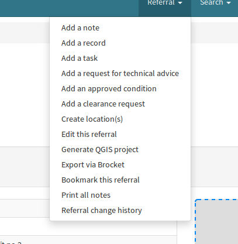

Planning Referral System
Overview
The plugin to PRS allows you to export the referral geometry to QGIS.
For this to work, you must have the QGIS monorail plugin installed and active.
Usage
From the PRS side, you can export the geometry from your referral to QGIS.
Click “Export via Brocket” in the referral dropdown menu.

At the moment, there is no acknowledgment of the export, though the javascript console will show
Development
You can work on the Javascript code for the export plugin by getting the source repo from Bitbucket. You will need nodejs and npm.
Now the source repo is git-based, hg will not work.
Get the repo.$ git clone https://bitbucket.org/dpaw/brocket-prs-plugin
$ cd brocket-prs-plugin
Install dependencies.$ npm install
And if you’re brave, start the test server and browse to http://localhost:7011$ npm test
The entry point for the source code is ./index.js and rest of the code resides in the src directory.
The code is written using ES2015 but vanilla javascript will work fine.
Modules follow the CommonJS convention of require and module.exports but ES2015 modules will work too.
The transpilation, minifiying and dev server setup is managed with Webpack.